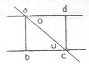

Kant: AA XIV, Mathematik , Seite 051 |
|||||||
Zeile:
|
Text:
|
|
|
||||
| 01 | perpendicularitaet der Linie auf die gegeb eine, sondern auf beyde | ||||||
| 02 | bewiesen werden, welche aber nicht aus der gleichheit der durchschneidenden | ||||||
| 03 | Linien folgt. | ||||||
| 04 | Den ab ist aus a der oberen, cd aus c der unteren Gefällt. Gesetzt | ||||||
| 05 | ich fällete beyde aus der oberen ad und zöge denn allererst |  |
|||||
| 06 | die Linie ac, so ist ab = dc. ac = ac, b = d und | ||||||
| 07 | die triangel folglich o = u gleich. | ||||||
| 08 | (g Wenn die Gleichheit der Weite zweyer Linien die definition des | ||||||
| 09 | paralelisms ausmachte, so müßte das definitum und die definition | ||||||
| 10 | reciprocabel seyn. Also ist hier zu sehen, daß die erstere nicht den | ||||||
| 11 | Ganzen Begrif der Zweyten erschopfen muß. Gleichwohl ist doch der | ||||||
| 12 | Satz reciprocabel, kan aber nicht bewiesen werden, weil die folge | ||||||
| 13 | aus einem Ganzen Begriffe hier zwar auf den Begrif der Gleichheit | ||||||
| 14 | der Winkel, aber nicht die construction derselben führt. Der Grund, | ||||||
| 15 | warum alle Entfernungen gleich sind, ist: weil die durchschneidende | ||||||
| 16 | Linie auf beyden perpendicular ist. Daher kan, weil aus der Folge | ||||||
| 17 | nicht auf den Grund geschlossen werden kan, in der construction auch | ||||||
| 18 | nicht die Gleichheit der wechselwinkel aus der Gleichheit der Linien, | ||||||
| 19 | dabey man nur einen Winkel in Betrachtung zieht, geschlossen werden. ) | ||||||
| [ Seite 050 ] [ Seite 052 ] [ Inhaltsverzeichnis ] |
|||||||
;){kind=link}